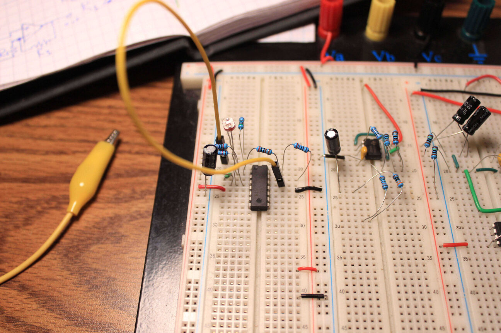
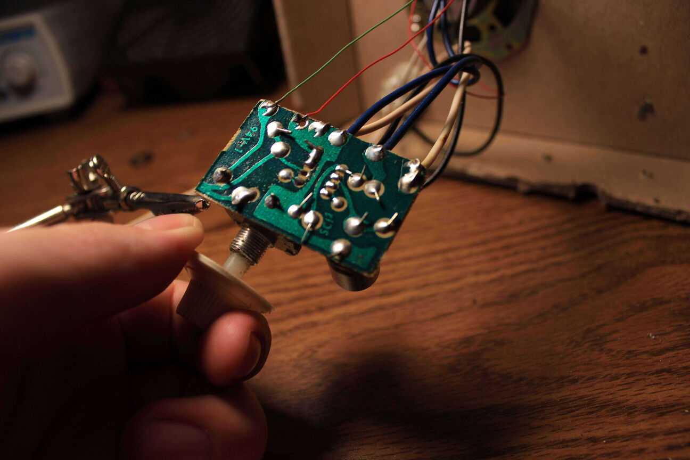
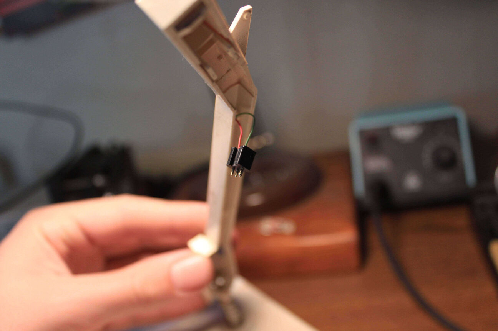
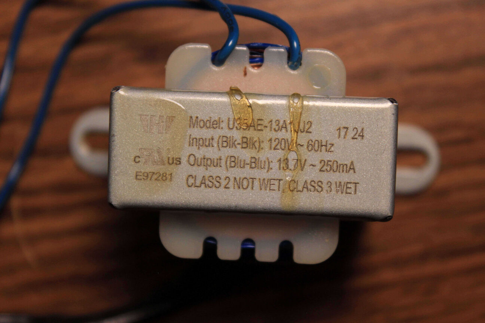
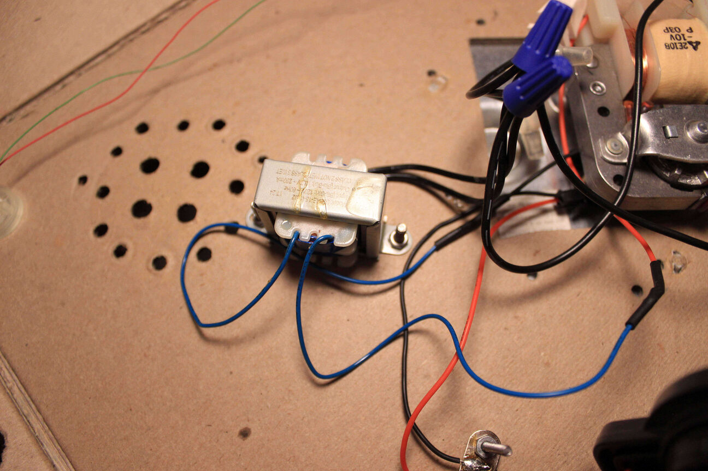
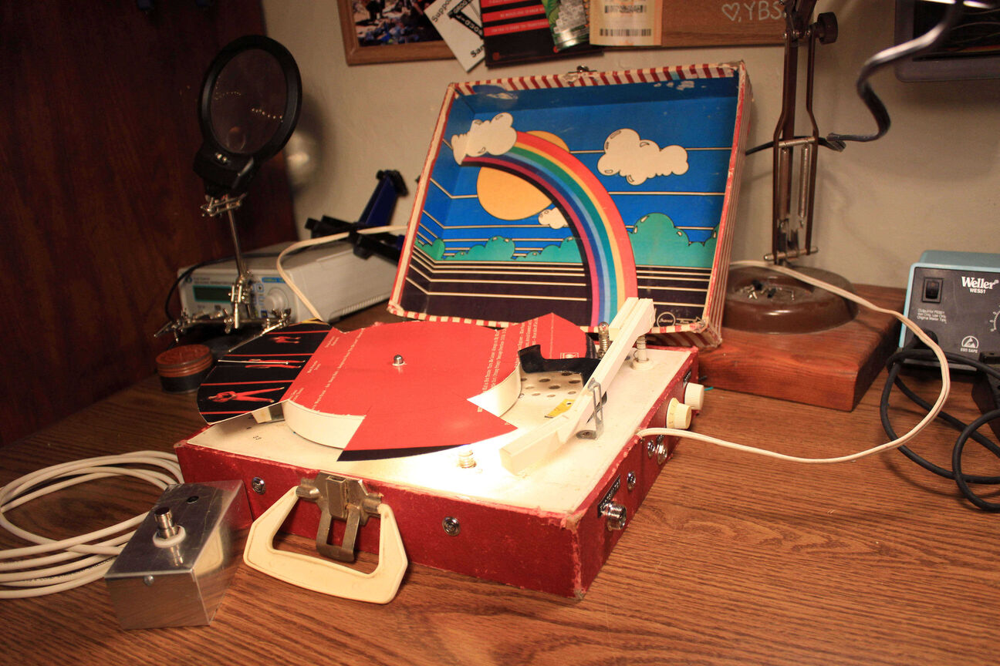

This is the first circuit I built with the photo-diode. It's just a voltage divider in series with a low gain amplifier.
You can see here how light shining on the photo-diode attenuates the signal on the oscilloscope.
I added a depth knob in between the photo-diode and ground then built a 555 timer circuit that switched this incandescent bulb on and off. At this point I had a perfectly good tremolo effect so I decided to over complicate things...

I started by taking apart the record player. This is all the electronics in the record player: a single diode rectifier, power supply cap, 386N amplifier IC, and some resistors to set the gain.

Here's the tone arm with the cartridge removed.
I crimped a pin connector and hot glued it in place. This way I could swap out different light sensors if I wanted too. I'm using the GL5537 here and that ended up working perfectly.
Here's the turntable motor/power-transformer. Everything important is mounted to this single piece of thick cardboard. Its as cheap as it gets. Those white wires coming off of the motor carry around 15V AC and I'm going to use them to power the electronics.
Using a single diode rectifier and a smoothing cap, I was able to get a solid 15V DC when testing with the multimeter.
.jpg "img11")
The single diode rectifier worked but let a lot of ripple through so I swapped it out for a superior
FULL BRIDGE RECTIFIER
. This doubled the frequency of the pulsed DC and reduced the ripple a lot. A voltage regulator helped to completely eliminate the ripple and bring the voltage down to a more standard 12V DC.
Here's the friction drive mechanism for the platter. I oiled up all the joints and used rubber renew to give the drive wheel some grip. It gave this thing a lot more torque. You can see a manufacture date of what looks like September 1, 1982
After I was sure my breadboard circuit was perfect, I soldered everything to a proto-board. The trimmer pot on here is for the gain of the first amplifier stage
My first mistake: I connected the current thirsty light bulb to the same power supply as my other electronics without checking the amount of current that puny transformer could provide.
The result of that mistake is a dim bulb and a voltage starved circuit. It brought the voltage down to half of what it needed to be
I decided to take a break from the electronics and fix up the funky little case this thing came in. Pretty much all the corners looked like this.
Hot glue to the rescue
To fix my power issue, I sacrificed an old Keurig that I picked up for a buck and took its transformer. There was a lot more that I got out of this thing though. That could be a post by itself.

Just enough current for the bulb. I'm stoked. The plan now is to just run this transformer in parallel with the other one and use it only for the bulb.

Here's the transformer mounted and wired up. It lights up the bulb plenty bright.
Next I had to tackle the foot switch. To reduce noise, I decided to use a relay to route the signal rather than the switch itself. I found this tiny little signal relay at a local electronics store.
I soldered a piece of proto-board to a spare pot that would function as the volume knob. I mounted the relay socket on this board and wired up the input and output jacks.
A shot of the relay board in place
Jacks and pots mounted
Time to hook it all together for a test run
I added a piece of bent vinyl to hold the tone arm above the record.
Everything fits and it sounds good so I'm ready to tighten everything down and mount the circuit board.
stand-offs in place
Now I'm ready to solder the foot switch. I used an old aluminium project chasis and a 3PDT foot switch.
I mounted an LED as well to function as an indicator
All put together
With the foot switch
Now its time to cut the records to block the light. I did some math and found that a cut every 18 degrees would give a tremolo frequency of around 7.5 Hz at 45 rpm and 5.5 Hz at 33 rpm. I printed a protractor to mark the surface accurately and then used a heat gun to soften the vinyl so I was able to just cut it with scissors.
It works!!!!
Next I wanted to experiment with making different rhythmic patterns so I cut the record sleeve into a circle and divided it into 8 sections.
Then I cut out some beats out and tried it on the turntable.

It sounded pretty rad if you play in time with it. Kinda like playing with a drum machine. I'm definitely going to experiment with some different rhythms later on.
All three discs I made
I added some labels for the controls and that's it!
.jpg "img21")
Bonus pic: my housemate left me his own optimized version.